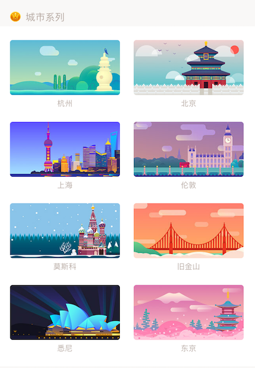
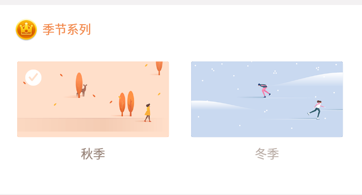

偏好设置
主题
提供以下主题：
纯色主题：默认（蓝色）、粉色、黑色、绿色、灰色、黄色。

城市系列主题：杭州、北京、上海、伦敦、莫斯科、旧金山、悉尼、东京。

季节系列主题：秋季、冬季。

语言
滴答清单默认跟随系统语言，如果您希望使用其他语言，可以手动选择。
铃声
您可以根据喜好选择铃声。
若您希望提醒铃声时间更长，可以在此开启「持续响铃」。
开启后，提醒铃声会持续播放 30 秒直到产生操作。若在 30 秒未及时处理任务，则会在两分钟后再次响铃。

注：iOS 10 上，当系统通知样式选中“横幅”时，持续响铃会失效；只有系统通知样式选中“提醒”或者“无”时，即可正常持续响铃
每日提醒
你可以选择一个固定时间，滴答清单将会在这个时间提醒你今天及已过期的任务，点击「每日提醒」即可设定提醒时间。
注：你也可以自定义每日提醒的时间。

时间精确到
你可以为任务设置时间所用的时间滚轮选择最小精度，如果你有一些任务需要精确到分钟，比如上午9：18 的任务，那么建议你将「时间精确到」选择为 1 分钟。
注：默认最小精度为 5 分钟。

最近任务
你可以在清单中选择「仅显示最近X个月」的任务，来筛选出清单中的近期任务，将清单整理的更简洁。
如果你希望「仅显示最近 1 个月」或「仅显示最近 3 个月」，可以进入「设置」-「偏好设置」-「最近任务」中进行选择。

快捷日期
你可以左滑任务设置快速日期，如果快捷日期中没有你常用的时间，那么进入「设置」-「偏好设置」-「快捷日期」中，可以对快捷日期进行配置。
- 显示快捷日期：显示哪些智能时间
- 设置智能时间的时间，滴答会根据当前的时间显示其中最近的两个
例如：上午八点时你对任务进行左滑，那么会显示出早上 9：00 和下午 13：00 两个智能时间。 - 设置符合自己习惯的下周：是“下周一”还是“7天后”

字体大小
滴答清单提供两种大小的字体供您选择。
星期开始于
进入「设置」-「偏好设置」-「星期开始于」中，根据个人习惯不同，可以选择周一、周日、周六。
应用角标
进入「设置」-「偏好设置」-「应用角标」，根据你的使用习惯，提供三种角标选择。
角标会在应用图标上直观显示出待办事项数，即使不进入应用也能够随时了解任务量。

农历
进入「设置」-「偏好设置」中就可以开启农历。
开启之后在日历中就会显示出农历日期，为任务设置重复时，也会出现农历日期的重复选项。